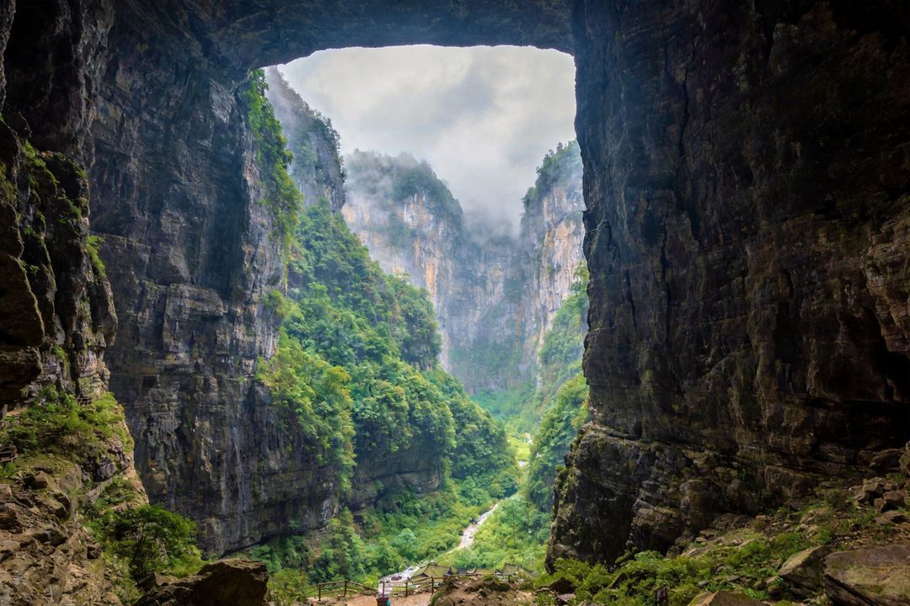

武隆天生三桥 · 喀斯特地心NATURAL ARCHES · 世界自然遗产
这是什么地方
- 重庆依山而建、两江环抱，长江与嘉陵江交汇，是世界少有的立体 8D 魔幻城市，号称“山城”“雾都”“火炉”。
- 名片是夜景（洪崖洞、南山一棵树、两江夜游）、麻辣火锅与网红轻轨穿楼，主城可逛性强、免费景点多。
- 周边更有武隆天生三桥（世界自然遗产）、大足石刻（世界文化遗产）两大重磅。
玩几天 & 参考价格
- 建议 3-4 天：主城夜景 1-2 天 + 武隆 1 天 + 人文红色 1 天。
- 洪崖洞、磁器口、李子坝、解放碑均免费；长江索道单程 30 往返 50、南山一棵树约 28-30。
- 武隆天生三桥 155 元（含中转车+电梯）、大足石刻约 110-115；以景区当日为准。
💡 重庆夜景必看；10-11 月、3-5 月气候最宜，夏季火炉炎热、冬季多雾但夜景更迷离。